Bready Or Knot: Fully-Baked
General Overview

Bready Or Knot: Fully-Baked is the game I made for Skills USA with a group of 5 other humans during my senior year of Questar III Gaming and Multimedia in the engine Construct 3. It follows the Evil Baguette and his crusade around the kitchen with the objective of killing its Baker. Through out the game you gain abilitys, fight a large cast of enemies, and engage in challenging bossfights the likes of which the Kitchen has never seen. The game overall has 4 bossfights all powerful and all themed around food. YeastBeast: A ferral and dangerous conglomeration of bread whoms movement is predictable but attacks are random. Inspired by Monkey Bread. Parmageddon: An incredibly smart and deadly mass of spagetti and meatballs. Uses random points for movement and AOE attacks. Inspired by Chicken Parmesan. CrackRoll: Sparatic and unpredicable, CrackRoll uses enhanced movement and lasers to best you. Inspired by bread with too much flour. DreadRoll: The most powerful and the leader of the food armies. The DreadRoll uses a mix of tactics to best you while being supported by certain reality warping powers. Inspired by Burnt Bread. These are the obstacles that stand in the way of the Evil Baguette and revenge. Now the question is... are you Bready... or Knot.
My Role
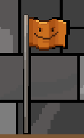
I was in charge of multiple things for this project. For starters I was the one and only programmer which means that everything in the game was coded and built by me. That also means that every issue and problem had to be tested and fixed by me. This was a moderate challenge due to the lack of other programmers on the team but thankfully I am adept enough at Construct 3 and the rest of my team had some basic understanding of the engine to assist with bug fixes and the like. I have had lots of late nights with the programming of this game. My second major role for this project was manager. This was the hardest to do for me because I also had to work on programming the game and coming up with concepts on top of managing the team and delegating tasks. Similar to programming, I was the only manager on the team, which was a mistake on my part because I feel that during the project I was definitly artificially overworking myself. My final major role was game designer. While we did have a dedicated game designer it was more my job to come up with concepts and it was his job to refine them. This means that everything in the game from abilities to levels to enemies came from my head. This was the easiest job for me because I just followed our design pillars and everything fell into place. The main design pillar was unique enemies. Using this I thought how to make a specific niche for every enemy and make them visually unique. The best example of this is the Peas. Functionally, the peas are inspired by slimes from Minecraft where as you attack them they progressively get smaller and faster. But the visual design of it was an upside down triangle. I felt this was unique because the generic shape for stacked enemies is big guy bottom and small guy top. I inverted that and made the largest (and fattest) guy sitting on top.
Screenshots
Enemies
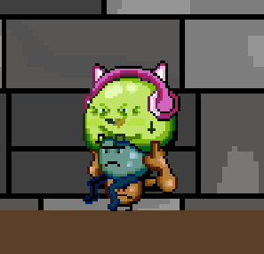
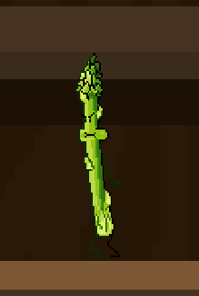
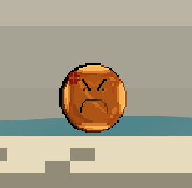
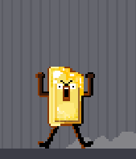
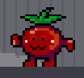
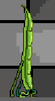
Bosses
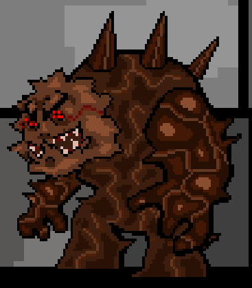
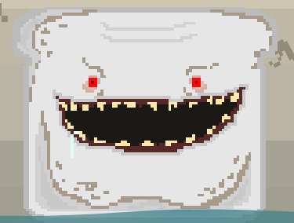
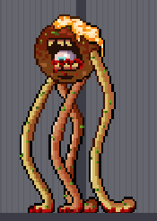
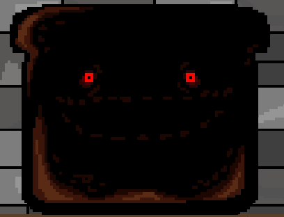
Play
If password is require it is ImBready